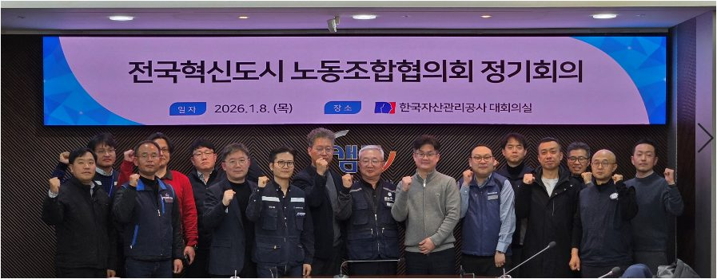
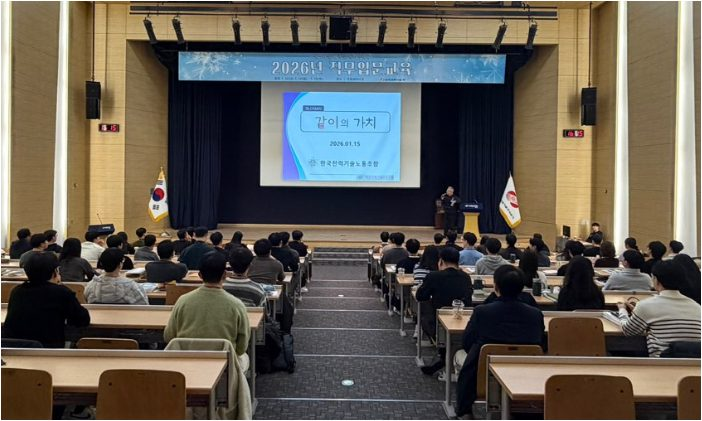
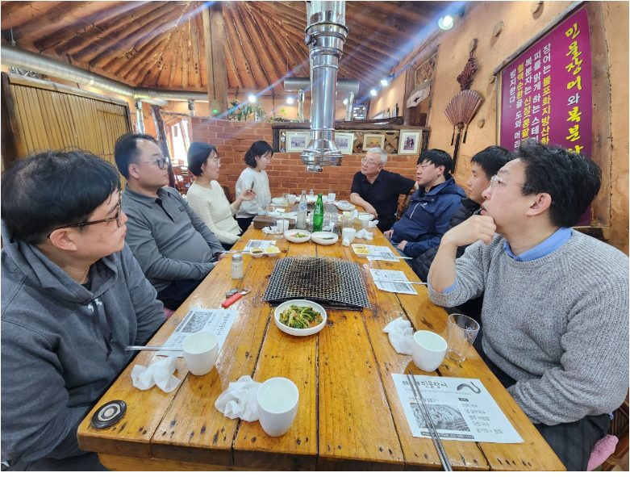
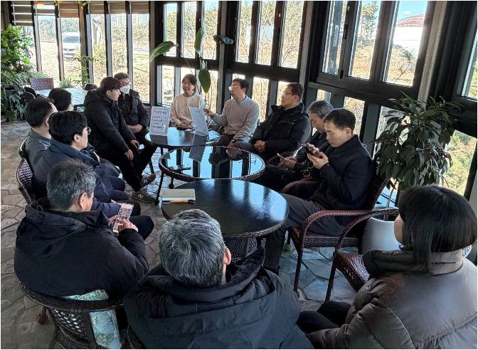
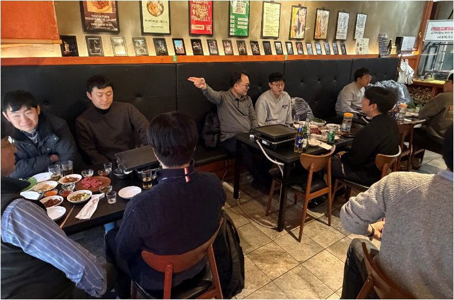
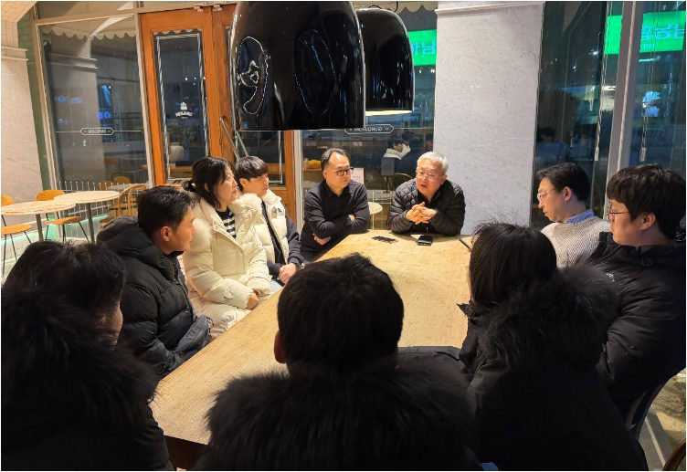
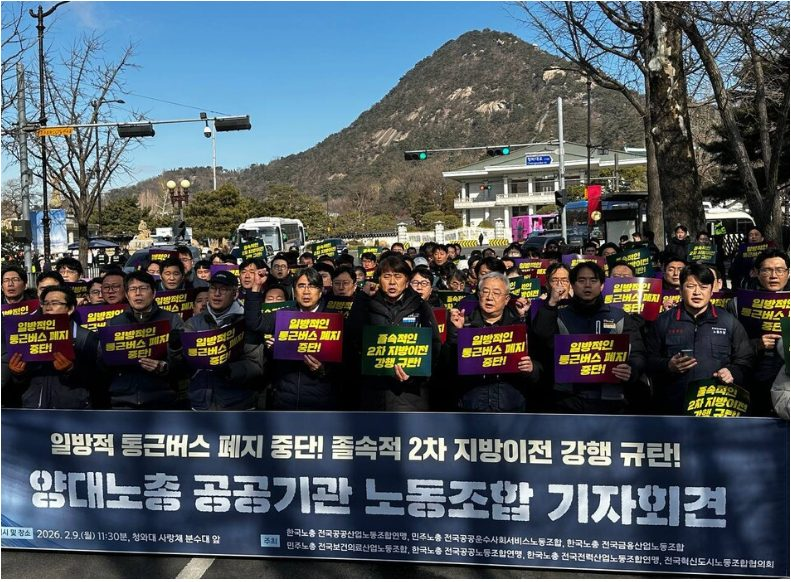

노동조합은 28층에서 재무처와 함께 직원 휴게공간 조성과 관련한 회의에 참석했습니다. 이번 회의에서는 직원들이 보다 편안하게 휴식을 취할 수 있는 공간을 조성하기 위한 방안과 운영 방향에 대해 의견을 나눴습니다. 특히 직원들의 이용 편의성과 실질적인 휴식 환경 조성을 위해 필요한 사항들을 중심으로 다양한 의견이 논의되었습니다.
노동조합은 직원들의 근무 중 충분한 휴식을 취할 수 있는 환경이 조성될 수 있도록 조합원들의 의견을 지속적으로 전달하고, 실질적인 휴게공간 개선이 이루어질 수 있도록 노력하겠습니다.
1월 8일
전국혁신도시협의회, 정기회의 참여
#혁신도시#통근버스
수도권 통근버스 중단 지침에 혁신도시 노조 간 공동 대응을 합의했습니다.
노동조합은 전국혁신도시노동조합협의회 정기회의에 참석하여 혁신도시 공공기관 노동조합 간 주요 현안에 대해 논의했습니다. 이번 회의에서는 최근 정부가 혁신도시 수도권 출퇴근 버스 운영 중지 지침을 내린 것과 관련하여 각 기관 노동조합의 우려와 대응 방안이 집중적으로 논의되었습니다.
참석한 노동조합들은 해당 지침이 혁신도시 근무자들의 출퇴근 여건과 정주 환경에 미칠 영향에 대해 의견을 공유하고, 노동자들의 실질적인 생활 여건을 고려한 정책이 필요하다는 데 공감대를 형성했습니다. 또한 혁신도시 정주 여건 개선과 노동자들의 근무 환경 향상을 위해 노동조합 간 지속적인 정보 공유와 공동 대응을 이어가기로 했습니다.
우리 노동조합 역시 이번 논의 내용을 바탕으로 조합원들의 출퇴근 여건과 근무 환경에 미치는 영향을 면밀히 살펴보고, 필요한 대응 방안을 검토해 나갈 예정입니다.

전국혁신도시노동조합협의회 정기회의 · 2026.1.8 · 한국자산관리공사 대회의실1월 15일
신입사원 직무입문교육 및 환영 단결식 참석
#신입사원#환영행사
새로 입사한 직원들을 환영하고, 조직 적응 지원을 약속했습니다.
노동조합은 신입사원 직무입문교육 및 환영 단결식에 참석하여 새롭게 입사한 직원들을 환영하고 격려하는 시간을 가졌습니다. 이번 행사에서는 신입사원들이 조직에 잘 적응하고 동료들과 함께 성장할 수 있도록 서로 소통하는 시간을 가졌으며, 노동조합 역시 선배 구성원으로서 따뜻한 환영의 메시지를 전했습니다.
노동조합은 앞으로도 신입사원들이 안정적으로 조직에 정착하고, 건강한 조직문화 속에서 근무할 수 있도록 지속적인 관심과 지원을 이어갈 예정입니다.

2026년 신입사원 직무입문교육 "같이의 가치" · 2026.1.151월 26일~28일
현장조합원 간담회 (대전·울진·월성·고리·한빛)
#현장간담회#사택#복지제도
사택 부족, 출장 지원, 근무환경 개선 요구를 현장에서 직접 수렴했습니다.
노동조합은 대전, 울진, 월성, 고리, 한빛 현장을 방문하여 현장 조합원들과 간담회를 진행하고 근무환경 및 복지와 관련한 다양한 의견을 청취하였습니다. 공통적으로 이사 비용 처리 절차 간소화, 경조금 신청 절차 개선, 효도지원비 제도 운영 여부, 30분 단위 휴가 사용 제도 도입 계획 등 다양한 복지 및 제도 개선 사항에 대한 의견이 공유되었습니다.
특히 울진 현장에서는 사택과 관련하여, 현재 사용 중인 하버팰리스 일부 세대를 회사 사택으로 추가 확보할 필요성이 제기되었습니다. 향후 건설사업이 본격적으로 진행될 경우 인력 투입이 증가하면서 사택 부족 문제가 더욱 심화될 수 있다는 우려가 있었으며, 매년 사업부의 인원 투입 계획을 사전에 반영하여 필요한 사택을 미리 확보하는 등 보다 체계적인 관리가 필요하다는 의견이 나왔습니다. 또한 사택이 부족할 경우 삼척 지역을 대체 거주지로 활용하는 방안도 함께 논의되었으며, 이 경우 출퇴근 지원 방안 마련의 필요성도 제기되었습니다. 아울러 회사 사유로 사택을 이동해야 하는 경우 이사 휴가를 부여하는 등 제도적인 지원이 필요하다는 의견도 전달되었습니다.
현장 근무자의 본사 출장과 관련한 애로사항도 공유되었습니다. 현재는 현장에서 본사를 방문해야 하는 경우 개인 휴가를 사용해야 하는 상황이 발생하고 있어, 조합원들이 보다 원활하게 출장 업무를 수행할 수 있도록 별도의 출장 지원 체계 마련이 필요하다는 의견이 제기되었습니다. 한편 월성 현장에서는 사무실 건물의 기울어짐 문제와 냉난방 시설 용량 부족 등 근무환경과 관련된 개선 요구가 제기되었습니다. 특히 냉난방 설비의 용량이 부족해 여름철과 겨울철 근무 환경이 열악하다는 의견이 있었으며, 시설 점검 및 보완이 필요하다는 현장의 목소리가 전달되었습니다.
노동조합은 이번 간담회를 통해 제기된 현장 의견을 면밀히 검토하고, 조합원들의 근무환경과 복지 향상을 위해 관련 부서와 지속적으로 협의해 나갈 계획입니다.




대전·울진·월성·고리·한빛 현장조합원 간담회 · 2026.1.26~28
⚠ 원본 원고의 "하버팰리채"를 사택 명칭으로 보고 "하버팰리스"로 교정했습니다. 정확한 명칭인지 확인이 필요합니다.
02
2026년 2월
2월 주요 활동
2월 9일
일방적 통근버스 폐지 중단 관련 기자회견 참석
#통근버스#기자회견
통근버스 폐지 중단을 촉구하는 공동 기자회견에 참여했습니다.
노동조합은 전국혁신도시노동조합협의회와 함께 혁신도시 통근버스 중단 지침과 관련한 기자회견에 참석했습니다. 이번 기자회견은 정부의 수도권 통근버스 중단 지침으로 인해 혁신도시 근무자들의 출퇴근 여건이 악화될 수 있다는 우려를 알리고, 현실적인 대책 마련을 촉구하기 위해 진행되었습니다.
참석한 노동조합들은 혁신도시 정주 여건이 충분히 개선되지 않은 상황에서 통근버스 중단이 이루어질 경우 근무자들의 생활과 근무 환경에 큰 영향을 미칠 수 있다는 점을 강조하며, 정부에 합리적인 정책 보완을 요구했습니다. 우리 노동조합 역시 조합원들의 출퇴근 여건과 근무 환경을 고려한 정책이 마련될 수 있도록 지속적으로 대응해 나갈 예정입니다.

양대노총 공공기관 노동조합 기자회견 · 2026.2.92월 26일
2026년 상반기 운영·상집·감사 수련대회 개최
#수련대회#조직결속
운영·상집·감사가 한자리에 모여 활동 방향을 공유하고 결속을 다졌습니다.
노동조합은 운영위원, 상집 간부, 감사가 함께하는 수련대회를 개최했습니다. 이번 수련대회는 노동조합 주요 현안을 공유하고 향후 활동 방향을 논의하기 위해 마련되었으며, 간부 소통과 결속을 강화하는 뜻깊은 시간이 되었습니다.
참석자들은 노동조합 운영과 관련된 다양한 의견을 나누며, 조직의 역할과 책임을 다시 한번 되새겼으며, 조합원 권익 향상과 노동조합 발전을 위해 더욱 노력할 것을 다짐했습니다.